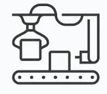

Côté Systèmes Industriels
Automatisation industrielle • Conception électrique • Robotique • Contrôle • Intégration

Vincent Côté
Technicien en électronique industrielle et automatisation
vincent@csindustriels.com
514‑679‑0850